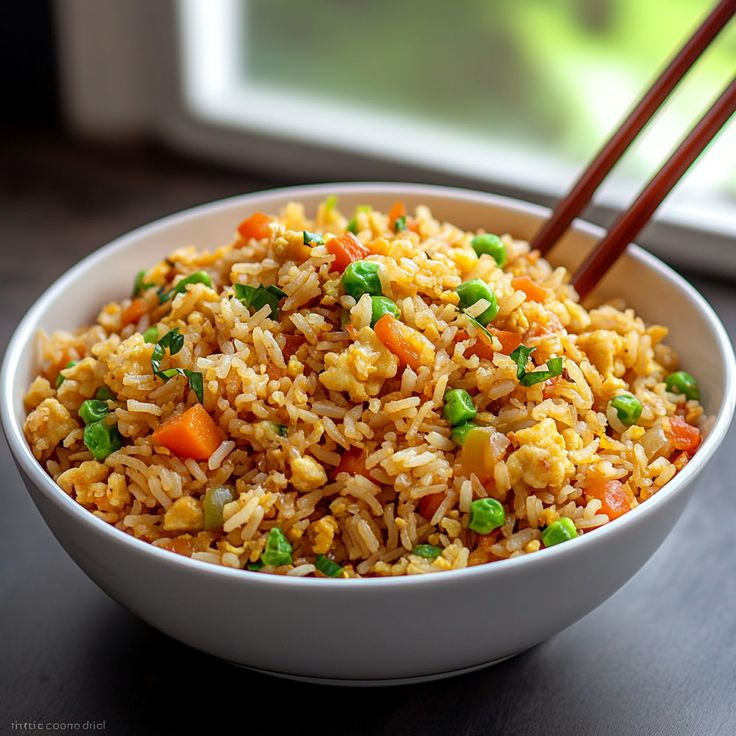

Fried Rice Recipe

Description
Fried rice is a fast and flavorful dish made by stir-frying cooked rice with eggs, vegetables, and soy sauce. It’s a great way to use leftover rice and ingredients. This versatile meal can be customized with chicken, shrimp, or tofu.
Ingredients
- Cooked rice (preferably day-old)
- Eggs
- Cooking oil
- Garlic
- Mixed vegetables (carrots, peas, corn)
- Soy sauce
- Salt and pepper
- Chicken, shrimp, or tofu (optional)
Steps
- Heat oil in a pan and sauté garlic until fragrant.
- Add eggs and scramble, then mix in vegetables.
- Add cooked rice and soy sauce, stirring well to combine.
- Cook for a few minutes until heated through, then season with salt and pepper and serve.
Home